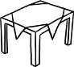

Korku deyip de geçmeyin, mühim kelimedir kendisi, bire bir eşanlamlısı olmayan. Bize en çok korkmayı öğrettiler bu memlekette. Öncelikle dışardan korktuk. Pencerenin dışındaki âlemden. Pencereleri külrengi boyayla boyanmış ilkokul sıralarında oturduk. Dünyanın kaç yerinde bulunur ilkokulların sınıf pencerelerini kaba saba renklerle badana boya etmeye kalkan zihniyetler? O boyaların dökülmüş yerlerinden, yama yama deliklerden gökyüzünü gözetledik. Gökyüzünden de korktuk, onu da korkutucu kıldılar. "Attığın her adımı Allah görür, hemen cezalandırır. Daha senin aklından geçtiği an kötü bir düşünce, başkaları bilmese bile Allah'ın melekleri hemen yazar deftere" derdi babaannem. Kocaman kapanmayan bir göz gibi anlatırdı Yaradan'ı, aşkla değil korkuyla yaklaşılan. Aklımdan kötü bir düşünce geçmesin diye hiçbir şey düşünmemeye çalışırdım. Siz hiç düşünmemeye, donmaya, kıpırdamamaya çalıştıkça, inadına insanın beyni nasıl da hızlanır, fikirler fikirleri nasıl da kovalar bilir misiniz? Hem iç hem dış mihraklardan korktuk senebesene. Az biraz korkmaz olursa içimizden biri, berikiler hemen hatırlattılar ona haddini. Dıştakilerden şüphelendik, kim bilir ne hain, ne meşum insanlar ve devletler ve milletler var orada, dışarısı denilen o ucube diyarda. "Türk'ün Türk'ten başka dostu yoktur, dört yanımız düşmanlarla çevrili, şimdi değilse sonra, bugün değilse yarın göz dikecekler cennet vatana" tehditleriyle yetiştirilmiş, korkuyla büyümüş kuşaklarız. Sadece dış değil, bir de iç mihraklardan korktuk. Birisi azıcık farklı düşünse, maazallah bireyselleşse, kulağını büktük derhal. Ve en çok "dinciler"in gelip de kadınları zorla çarşafa sokmalarından, hepimizi gerisin geri evlere tıkmalarından korktuk. "Takiye" suçlaması çoğu zaman bu katmerli korkunun bilinçaltımızdaki yansımalarından ibaret bir başka kelime idi. "Şimdilik iyi görünüyorlar ama takiye yapıyorlar, hele bir iktidara gelsinler elbet gösterecekler gerçek yüzlerini..." Öğretmen Kubilay hadisesiyle büyümüş kuşaklarız. Kimseciklere güvenmeyiz.
AKP iktidarı seneler sonra toplumun farklı kesimlerinin nihayet korkularından silkindiğini göstermesi bakımından da anlamlıydı. Bire bir AKP tabanından olmayan pek çok aydın, sanatçı, aktivist salt korkuyla çizilmiş hudutların aşılabilmesi için gayret gösterdiler, köprüler oluşturdular. "Bunlara güven olur mu?", hatta ve hatta "iyi ki ordu var, gerekirse müdahale eder" diyenlere karşı, memleketin daha fazla korkuya değil demokrasiye ihtiyacı olduğunu, geleneksel siyasi ve kültürel elitin yumuşaması, esnekleşmesi ve en önemlisi yekpareliğinden, tahakkümperverliğinden arınması gerektiğini savundular. Bu aydınlar toplumun başka başka kesimleri arasında, hem de birbirleriyle aynı masada oturmayacak, iki çift laf etmeyecek kesimleri arasında köprüler oluşturdular.
Köprü deyip de geçmeyin, mühim kelimedir kendisi. Toplumun farklı kesimleri arasında çerçilik yapan, kültürün akmasını sağlayan, diyaloglar kuran, korkunun tahakkümünü kıran köprülere ihtiyaç var. "Avrupa bizim işimize ne karışır, biz Türk'üz" saptaması sadece ve sadece eski korkuların nüksettiğini, gene kendimizden başka kimseciklere güvenmemeye başladığımızı gösterir. Unutmamalı ki "dışarıdaki düşmanlar" korkusu ile "içerideki düşmanlar" korkusu el ele gider. AKP iktidarı köprülerin önemini göremediği anda, bu toplumdaki korkuları yeniden alevlendirmiş olacaktır, hem kendininkileri hem de karşıtlarınınkileri.
Köprünüz olmazsa ne sesiniz geçer karşı kıyıya, ne karşı kıyıdan bir yolcu gelir buraya.
Arizona